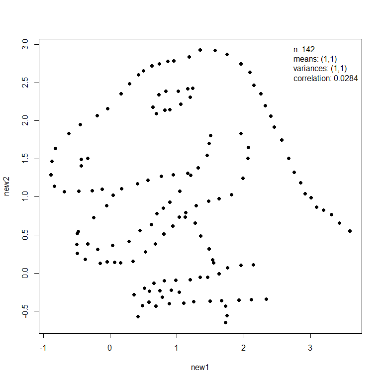
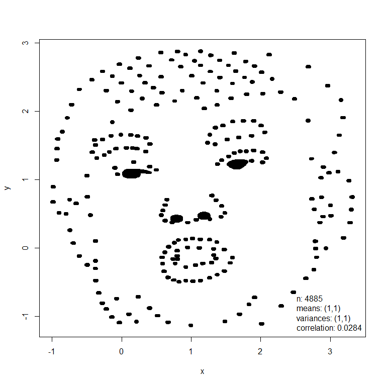

What does anscombiser do?
Anscombe’s quartet are a set of four two-variable datasets that have several common summary statistics (essentially means, variances and correlation) but which have very different joint distributions. This becomes apparent when the data are plotted, which illustrates the importance of using graphical displays in Statistics. The anscombiser package provides a quick and easy way to create several datasets that have common values for Anscombe’s summary statistics but display very different behaviour when plotted. It does this by transforming (shifting, scaling and rotating) the dataset to achieve target summary statistics.
An example
The mimic() function transforms an input dataset (dino below left) so that it has the same values of Anscombe’s summary statistics as another dataset (trump below right).
library(anscombiser)
library(datasauRus)
dino <- datasaurus_dozen_wide[, c("dino_x", "dino_y")]
new_dino <- mimic(dino, trump)
plot(new_dino, legend_args = list(x = "topright"))
plot(new_dino, input = TRUE, legend_args = list(x = "bottomright"), pch = 20)
In this example these images had similar summary statistics from the outset and therefore the appearance of the dino dataset has changed little. Otherwise, the first dataset will be deformed but its general shape will still be recognisable.
The rotation applied to the input dataset is not unique. The function mimic (and a function anscombise that is specific to Anscombe’s quartet) has an argument idempotent that controls how the rotation is performed. In the special case where the input dataset already has the desired summary statistics, using idempotent = TRUE ensures that the output dataset is the same as the input dataset.
Vignette
See vignette("intro-to-anscombiser", package = "anscombiser") for an overview of the package.